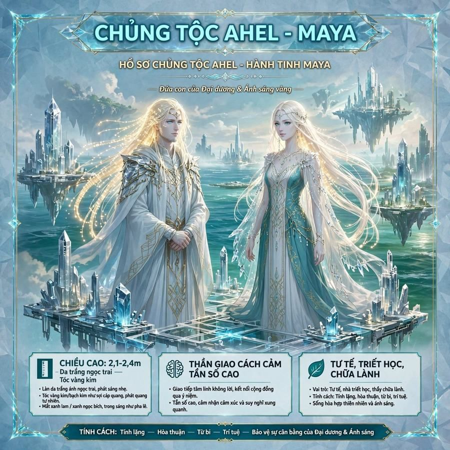
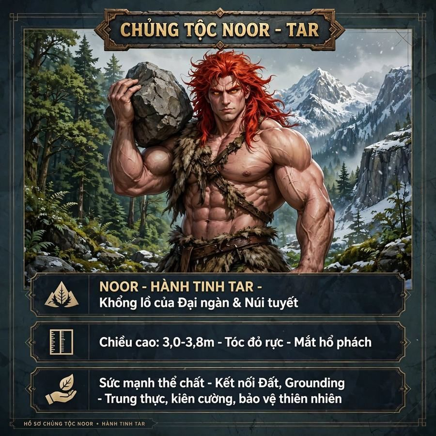
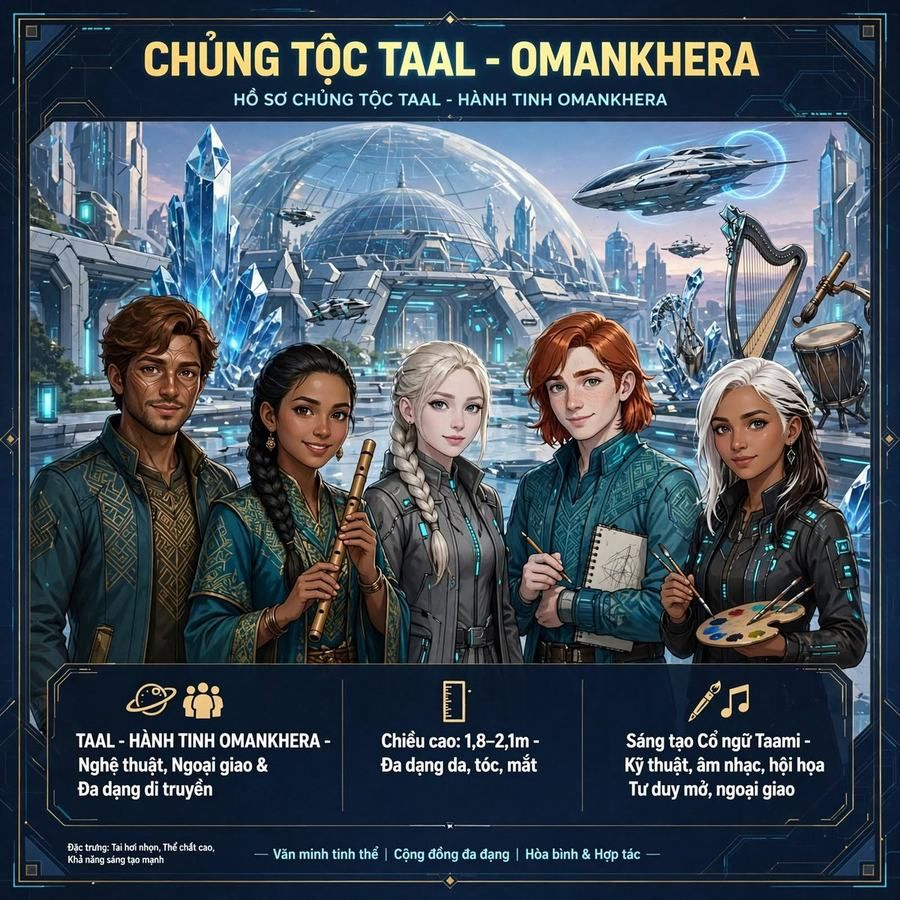
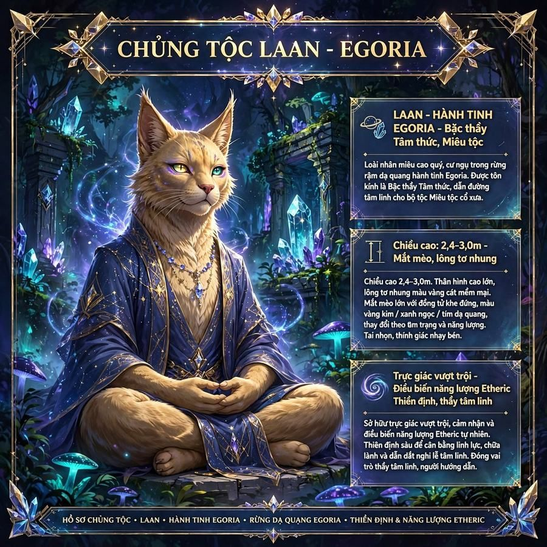
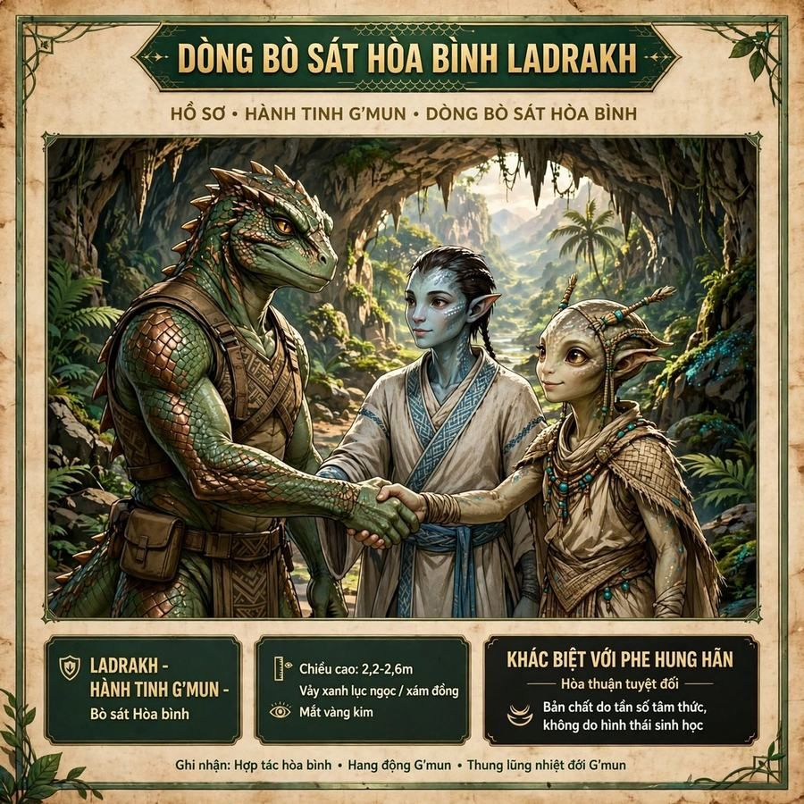
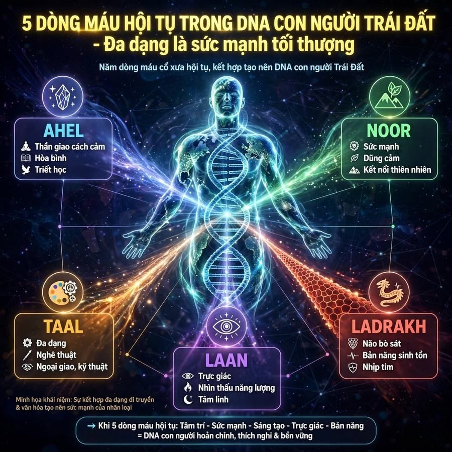

Trang chủ / Chuyên đề 1: Tiền Sử Thiên Hà / Kỳ 4
Chuyên đề 1 · Kỳ 4 / 100
4 CHỦNG TỘC NGƯỜI NGUYÊN THỦY (AHEL, NOOR, TAAL, LAAN) & DÒNG BÒ SÁT LADRAKH

Ở ba kỳ trước, chúng ta đã cùng nhau chứng kiến những cột mốc vĩ đại của bình minh thiên hà: Từ sự phân rã dải ý thức Toàn Thể qua Lăng Kính Của Lyra, bản thiết kế di truyền 12 chuỗi DNA của Liên minh Paa-Taal, cho đến bức tranh môi trường sống thiên đường tại Hệ Sao Man (Kepler-62).
Nhưng khi bước vào lòng hệ sao Man, điều kỳ diệu nhất không chỉ nằm ở cảnh sắc thiên nhiên trù phú hay nguồn năng lượng Etheric tràn ngập, mà nằm ở sự phân hóa sinh học rực rỡ của 5 dòng tộc sinh mệnh khởi nguyên.
Từ bản thiết kế di truyền chuẩn mực của Các Đấng Sáng Lập, sự thích nghi với môi trường sinh thái độc đáo của từng hành tinh đã khai sinh ra 4 nhánh người nguyên thủy: Ahel, Noor, Taal, Laan cùng một dòng sinh mệnh Bò sát bản địa hòa bình: Ladrakh.
Họ là ai? Cấu trúc di truyền, diện mạo, đặc tính tâm linh và phong cách sống của từng chủng tộc có điểm gì đặc biệt? Và sự hội tụ của các dòng máu này mang ý nghĩa như thế nào đối với bộ gen của con người Trái Đất ngày nay?
Hãy cùng dấn thân vào Kỳ 4: 4 Chủng Tộc Người Nguyên Thủy & Dòng Bò Sát Ladrakh để giải mã bức tranh di truyền phong phú nhất tại nôi tổ tiên Lyra!
✦ ✦ ✦1. CHỦNG TỘC AHEL (HÀNH TINH MAYA) — NHỮNG ĐỨA CON CỦA ĐẠI DƯƠNG VÀ ÁNH SÁNG VÀNG
Chủng tộc Ahel là một trong những dòng người lâu đời và thuần khiết nhất được nuôi dưỡng tại hành tinh đại dương Maya thuộc hệ sao Man.
A. Diện Mạo & Cấu Trúc Di Truyền
- Hình Thể & Chiều Cao: Người Ahel sở hữu vóc dáng cao rực rỡ (trung bình từ 2,1m đến 2,4m ở nam giới, và 1,9m đến 2,2m ở nữ giới). Cơ thể họ cân đối, thanh thoát, vô cùng dẻo dai và mang tỷ lệ hình học thiêng liêng hoàn hảo.
- Làn Da & Mái Tóc: Làn da của người Ahel cực kỳ sáng, mang sắc trắng ánh ngọc trai tự nhiên. Mái tóc của họ là niềm tự hào di truyền: Thường có màu vàng kim rực rỡ hoặc màu bạch kim óng ánh, tựa như những sợi cáp quang sinh học thu phát năng lượng từ ngôi sao mẹ Mana.
- Đôi Mắt Xanh Lam Tinh Khiết: Mắt người Ahel có màu xanh lam sâu thẫm hoặc xanh ngọc bích. Đôi mắt này chứa mật độ vi tế bào quang học cao, cho phép họ nhìn thấy trọn vẹn dải năng lượng Etheric và quang phổ hồng ngoại trong tự nhiên.
B. Phong Cách Sống & Đặc Tính Tâm Linh
- Văn Hóa Đại Dương & Đô Thị Tinh Thể Nổi: Sống trên hành tinh Maya ngập tràn đại dương, người Ahel xây dựng các quần thể kiến trúc vòm bằng thạch anh mờ nổi trên mặt nước hoặc ẩn mình dưới các rạn tinh thể san hô.
- Thần Giao Cách Cảm Tần Số Cao: Người Ahel phát triển khả năng giao tiếp thần giao cách cảm ở cấp độ rất cao. Họ sử dụng các chuỗi tần số âm thanh Solfeggio kết hợp với hình ảnh tâm trí để trao đổi thông tin mà không cần đến lời nói thô.
- Tĩnh Lặng & Hòa Thuận: Tính cách của người Ahel rất điềm tĩnh, ôn hòa, giàu lòng từ bi và yêu chuộng hòa bình. Họ đóng vai trò là những tư tế, nhà triết học và thầy chữa năng lượng trong cộng đồng hệ sao Man.

2. CHỦNG TỘC NOOR (HÀNH TINH TAR) — NHỮNG KHỔNG LỒ CỦA ĐẠI NGÀN VÀ NÚI TUYẾT
Được nuôi dưỡng trên hành tinh Tar (Elhaziel) — nơi sở hữu những dãy núi đá tuyết hùng vĩ và những cánh rừng rậm ngút ngàn — chủng tộc Noor phát triển thành những người khổng lồ dũng mãnh.
A. Diện Mạo & Cấu Trúc Di Truyền
- Hình Thể Khổng Lồ: Người Noor là chủng tộc có vóc dáng đồ sộ nhất trong 4 dòng người Lyra. Nam giới người Noor thường cao từ 3,0m đến 3,8m, với khung xương chắc khỏe, lồng ngực rộng và khối cơ bắp phi thường.
- Làn Da & Mái Tóc Rực Rỡ: Làn da người Noor có sắc hồng hào khỏe mạnh hoặc hơi rám nắng do tiếp xúc với từ trường mạnh của hành tinh Tar. Mái tóc của họ vô cùng nổi bật với dải màu đỏ rực như ngọn lửa, màu rơm cháy hoặc màu vàng sẫm.
- Đôi Mắt Hổ Phách & Năng Lực Sinh Học: Mắt người Noor thường có màu hổ phách, nâu vàng hoặc xanh lục bảo. Hệ thống tim mạch và phổi của họ được thiết kế để hoạt động hoàn hảo trong môi trường không khí loãng trên các cao nguyên tuyết.
B. Phong Cách Sống & Đặc Tính Tâm Linh
- Hòa Nhập Trọn Vẹn Với Rừng Núi: Người Noor sống trong các thung lũng đá và rừng rậm. Họ đẽo gọt các vách núi tự nhiên thành các gian nhà sinh thái mà không làm tổn hại đến cấu trúc địa chất của hành tinh.
- Sức Mạnh Thể Chất & Kết Nối Đất (Grounding): Người Noor sở hữu lực lượng thể chất kinh ngạc, có thể di chuyển những khối đá nặng hàng tấn bằng tay trần hoặc bằng cách kết hợp với sóng âm thanh. Họ có mối liên kết tâm linh sâu sắc với dải từ trường đất và các linh hồn thực vật.
- Trung Thực & Kiên Cường: Người Noor nổi tiếng với tính cách bộc trực, kiên cường, trung thực tuyệt đối và sẵn sàng xả thân bảo vệ cộng đồng. Họ là những chiến binh bảo vệ tự nhiên và là những người giữ gìn sự cân bằng sinh thái trên các hành tinh.

3. CHỦNG TỘC TAAL (HÀNH TINH OMANKHERA) — TRUNG TÂM NGHỆ THUẬT, NGOẠI GIAO VÀ ĐA DẠNG DI TRUYỀN
Hành tinh Omankhera với khí hậu ôn hòa 4 mùa và địa hình thảo nguyên trù phú là nơi sinh trưởng của chủng tộc Taal — nhánh người mang sự đa dạng và linh hoạt nhất trong gia đình Lyra.
A. Diện Mạo & Cấu Trúc Di Truyền
- Hình Thể Trung Bình & Linh Hoạt: Người Taal có chiều cao tương đối gần gũi với con người Trái Đất ngày nay (trung bình từ 1,8m đến 2,1m). Thể hình của họ thanh thoát, uyển chuyển và linh hoạt.
- Sự Đa Dạng Màu Da & Mái Tóc: Khác với Ahel (tóc vàng) hay Noor (tóc đỏ), chủng tộc Taal thể hiện sự phong phú di truyền tuyệt vời. Làn da của họ trải dài từ da đồng, da nâu mịn, da ngăm cho đến da trắng; mái tóc mang các tông màu nâu hạt dẻ, đen điệp, đỏ đồng hoặc bạch kim.
- Đôi Mắt Đa Sắc: Mắt người Taal có thể mang màu hazel (nâu xanh), màu nâu ấm, màu xám tinh thể hoặc xanh lục.
B. Phong Cách Sống & Đặc Tính Tâm Linh
- Trung Tâm Ngoại Giao & Kiến Trúc Đô Thị: Người Taal là những nhà kiến tạo đô thị xuất sắc. Họ xây dựng các thành phố tinh thể vòm tròn rực rỡ tại Omankhera, nơi trở thành trung tâm giao thương, hội họp chính trị và trao đổi tri thức của toàn hệ sao Man.
- Phát Triển Công Nghệ & Nghệ Thuật: Người Taal sở hữu trí tuệ kỹ thuật tài hoa. Họ sáng tạo ra các phi thuyền di chuyển từ trường, các thiết bị điều biến năng lượng Etheric và là những bậc thầy về âm nhạc, hội họa, điêu khắc.
- Tư Duy Mở & Ngoại Giao: Người Taal có tâm trí cực kỳ cởi mở, yêu thích sự kết nối và có năng khiếu ngoại giao bẩm sinh. Chính họ là chủng tộc đã sáng tạo ra Cổ ngữ Taami — ngôn ngữ giao tiếp chung cho toàn bộ hệ sao Man.

4. CHỦNG TỘC LAAN (HÀNH TINH EGORIA) — BẬC THẦY TÂM THỨC MANG NÉT UY NGHI CỦA LOÀI MÈO (FELINE-HUMANOID)
Tại hành tinh Egoria ngập tràn những rừng rậm dạ quang, chủng tộc Laan xuất hiện với một diện mạo vô cùng độc đáo và linh thiêng: Dòng người mang các đường nét quý phái của loài mèo (Feline-Humanoid).
A. Diện Mạo & Cấu Trúc Di Truyền
- Vóc Dáng Quý Phái & Uy Nghi: Người Laan có thân hình cao lớn (trung bình từ 2,4m đến 3,0m), di chuyển với sự uyển chuyển, nhẹ nhàng và tĩnh lặng tuyệt đối.
- Khuôn Mặt & Đôi Mắt Mèo Linh Thiêng: Khuôn mặt người Laan mang sự kết hợp hoàn hảo giữa nét đẹp hình người và nét uy nghi của loài feline. Đôi mắt của họ to tròn, có đồng tử dạng khe đứng nhạy cảm với ánh sáng, mang màu vàng kim, xanh ngọc hoặc tím dạ quang.
- Lớp Lông Tế Bào Mịn & Đôi Tai Tinh Anh: Làn da người Laan được bao phủ bởi một lớp lông tơ mịn màng tựa như nhung với các tông màu vàng cát, trắng tuyết hoặc đốm đồng. Đôi tai của họ hơi nhọn về phía đỉnh, có khả năng xoay nhẹ để định vị tần số âm thanh vi mô.
B. Phong Cách Sống & Đặc Tính Tâm Linh
- Bậc Thầy Năng Lượng Etheric: Người Laan sở hữu năng lực tâm thức và trực giác vượt trội nhất trong 4 chủng tộc. Họ có thể nhìn thấy trọn vẹn các dòng chảy năng lượng trong không gian, điều khiển sự ngưng tụ của vật chất bằng ý nghĩ và du hành thể phách một cách dễ dàng.
- Đời Sống Tĩnh Lặng & Thiền Định: Họ sống trong các đền thờ tinh thể ẩn sâu trong rừng rậm Egoria. Đời sống của người Laan dành phần lớn cho việc thiền định, kết nối với Nguồn Vũ Trụ và giữ gìn các mã khóa tri thức tối cao cho dải Ngân Hà.
- Trí Tuệ Uy Sâu & Sự Bảo Hộ: Người Laan đóng vai trò như những người thầy tâm linh, các cố vấn tối cao cho hội đồng hành chính của hệ sao Man.

5. DÒNG BÒ SÁT HÒA BÌNH LADRAKH (HÀNH TINH G'MUN) — ĐẬP TAN ĐỊNH KIẾN VỀ CHỦNG BÒ SÁT
Bên cạnh 4 chủng tộc người nguyên thủy, hệ sao Man còn là quê hương bản địa của một dòng sinh mệnh vô cùng đặc biệt tại hành tinh G'mun: Chủng tộc Bò sát hòa bình Ladrakh.
A. Diện Mạo & Sinh Học Bản Địa
- Hình Thái Bò Sát Dạng Người: Người Ladrakh có thân hình đứng thẳng dạng người, cao từ 2,2m đến 2,6m. Làn da của họ là mảng vảy mịn màu xanh lục ngọc, xám đồng hoặc xám lục.
- Đôi Mắt Vàng Kim & Lớp Giáp Tự Nhiên: Mắt người Ladrakh có màu vàng kim sắc nét. Lớp vảy trên cơ thể giúp họ chịu đựng tốt nhiệt độ ấm áp và từ trường cao tại hành tinh G'mun.
B. Sự Cộng Hưởng Sinh Thái Hoàn Hảo Với 4 Chủng Tộc Người
- Ladrakh Khác Biệt Hoàn Toàn Với Phe Hung Hãn: Đây là điểm cực kỳ quan trọng! Khác với các lực lượng Bò sát hung hãn ở các chòm sao khác, chủng tộc Ladrakh tại hệ sao Man tiến hóa trong dải tần số năng lượng từ bi và hòa bình.
- Cùng Xây Dựng Thiên Đường: Người Ladrakh sống hòa thuận tuyệt đối với 4 chủng tộc người (Ahel, Noor, Taal, Laan). Họ tham gia vào hội đồng ngoại giao chung, đóng góp trí tuệ về địa chất, hang động và năng lượng lòng đất để phát triển hệ sao Man.
- Minh Chứng Cho Triết Lý Tự Do: Sự tồn tại của người Ladrakh chứng minh rằng bản chất của một chủng tộc không bị ấn định bởi hình thái sinh học (Bò sát hay Người), mà phụ thuộc vào dải tần số tâm thức và sự lựa chọn triết lý sống của chủng tộc đó!

6. SỰ HỘI TỤ CỦA 5 DÒNG MÁU TRONG DNA CON NGƯỜI TRÁI ĐẤT NGÀY NAY
Sự phân hóa di truyền tại hệ sao Man không hề mất đi sau thảm họa chiến tranh Lyra. Qua hàng chục triệu năm di cư, cả 5 dòng di truyền huyền thoại này đều đã hội tụ trở lại trong bộ gen con người Trái Đất!
- Dòng Máu Ahel: Mang lại cho con người khả năng thần giao cách cảm, tình yêu hòa bình, tư duy triết học và vẻ đẹp thanh thoát.
- Dòng Máu Noor: Mang lại sức mạnh thể chất kiên cường, lòng dũng cảm, sự bộc trực và kết nối sâu sắc với tự nhiên.
- Dòng Máu Taal: Mang lại sự đa dạng về màu da/mái tóc, tư duy nghệ thuật, khả năng ngoại giao và tài năng kỹ thuật sáng tạo.
- Dòng Máu Laan: Kích hoạt trực giác nhạy bén, khả năng nhìn thấu năng lượng, trí tuệ tâm linh và sự linh hoạt dẻo dai.
- Mã Gen Ladrakh / Bò Sát Hòa Bình: Đóng góp vào cấu trúc não bộ bò sát (Reptilian Brain Complex) giúp kiểm soát bản năng sinh tồn, nhịp đập tim và chức năng tự động của thể xác vật lý.

7. LỜI KẾT KỲ 4: SỰ ĐA DẠNG LÀ SỨC MẠNH TỐI THƯỢNG
Nhìn lại 5 chủng tộc nguyên thủy tại nôi tổ tiên Lyra, chúng ta rút ra một bài học tâm linh sâu sắc:
- Không Có Chủng Tộc Thượng Đẳng: Dù là Ahel, Noor, Taal, Laan hay Ladrakh, mỗi chủng tộc đều mang một mảnh ghép di truyền độc đáo và bình đẳng trong mắt Nguồn.
- Tôn Trọng Sự Đa Dạng Trên Trái Đất: Sự đa dạng về sắc tộc, màu da và văn hóa trên Trái Đất ngày nay chính là sự phản chiếu rực rỡ của di sản thiên hà. Thay vì phân biệt hay kì thị, hãy trân trọng sự đa dạng đó như chính kho báu di truyền mà các Đấng Sáng Lập đã gửi gắm vào chúng ta!